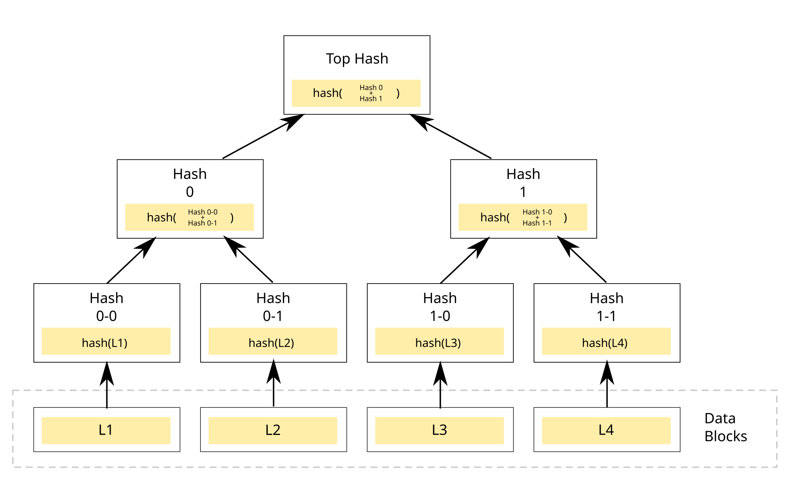

Content-addressed storage

{kind=link}
The namespace here is not a tree of blocks with names attached to it. Objects are named by the SHA-256 of their own contents and assembled into Merkle trees, and several operations that are normally expensive collapse as a direct consequence.
- A copy is O(1) on any size. Identical content already has an identical name, so copying is adding a reference to something that exists.
- A snapshot is one hash. The root of the tree names the entire state of the namespace at that moment.
- Comparing two whole subtrees is one comparison, because if the root hashes match the contents match.
- Rolling back branches instead of rewriting. The old root remains valid and still points at everything it pointed at, because nothing was overwritten to produce the new one.
- Deletion cannot destroy content that something else still references, since names are derived from content and never assigned.
Those are not features that were added on top. They are what content addressing already implies, and the applet list reflects it: cp, same and snap exist because they became cheap.
The rule that makes it work
The content hash covers content only, and never block locations. This sounds too obvious to state and is easy to violate by including a block pointer somewhere in the hashed structure, at which point moving a block to defragment renames the object that contains it, every reference to that object breaks, and deduplication stops working without any error being raised.
Surviving power loss
Three properties, each chosen against a specific failure. The store is append-only, so chunks are never rewritten and a checkpoint that fails halfway cannot damage an earlier one, because it never touches the blocks an earlier one occupies. It is content-addressed, so every chunk carries the SHA-256 of its contents and reads verify it, which means corruption surfaces at read time instead of propagating into whatever is being restored.
And there are two superblocks. The obvious design is a single root pointer updated atomically, and it is not actually safe: a 512-byte write is not guaranteed atomic across power loss, so a torn sector can destroy the only root and take every checkpoint with it. Two superblocks alternate, each carrying a sequence number and a checksum over itself, and mounting picks the highest sequence number that checksums. A torn write then costs the newest checkpoint and nothing else. This is the reasoning behind ZFS uberblocks and F2FS checkpoints, arrived at from the same starting point.

{kind=link}
The driver, and why it is small
The NVMe driver exists at all because of decisions made earlier. Identity mapping means virtual equals physical, so a heap pointer is a DMA address, with no IOMMU setup, no translation and no bounce buffers. PCI enumeration through ECAM finds the controller and its BAR. And non-RAM pages are mapped uncacheable, so doorbell writes actually reach the device and do not sit in a write-back cache line, which is the kind of thing that costs a day if it is not arranged in advance.
Write locking, and why it stays that way
NVMe writes are locked by default. They unlock only after a target region has been explicitly identified, the formatter re-checks before touching anything, and every error path locks them again on the way out.
The reason is specific: the only NVMe device in the development laptop is the internal drive holding Windows, and a stray LBA there is unrecoverable. Reads are harmless and prove everything except the write path, so the write path is exercised against a throwaway QEMU image instead. On a machine whose disk is fully allocated, storage initialisation fails and says so, which is the intended outcome rather than a bug to work around. Leaving the lock open on a failure path is precisely how a safety mechanism becomes decorative.